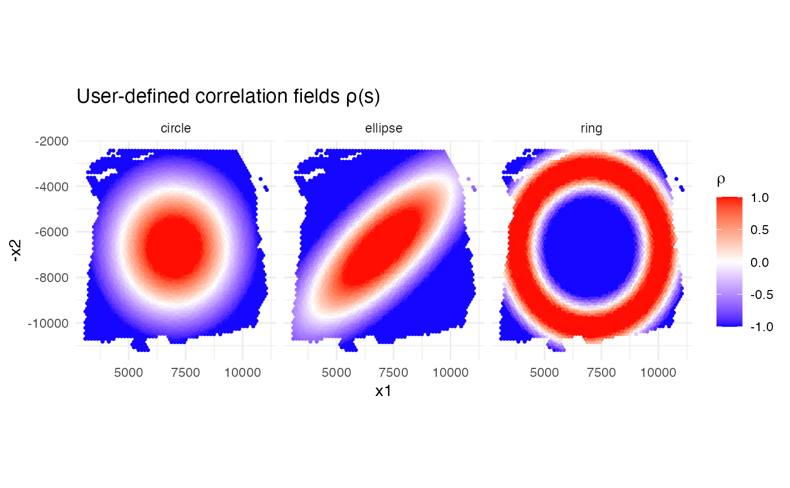
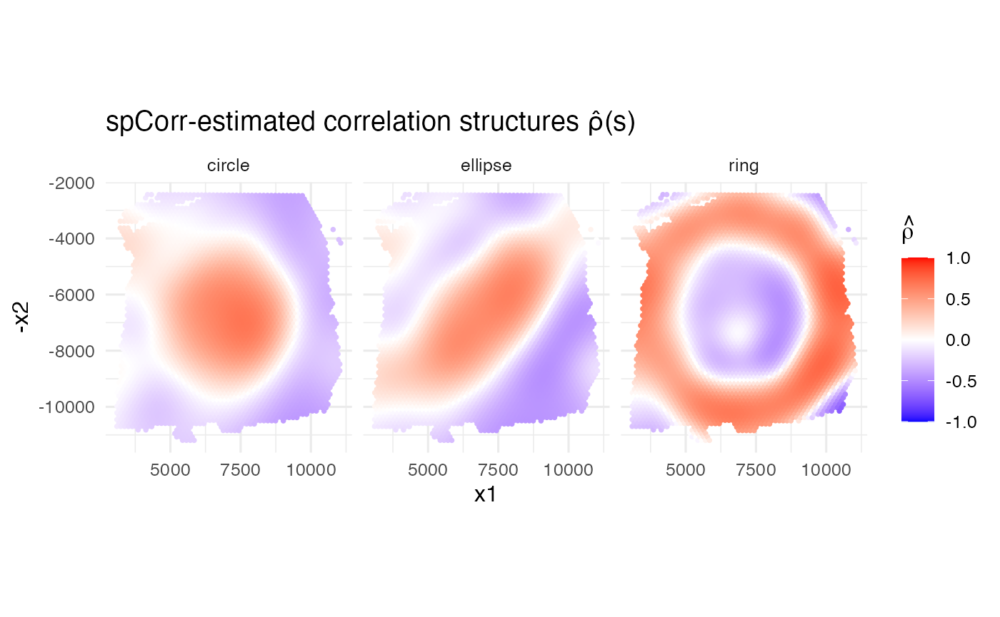
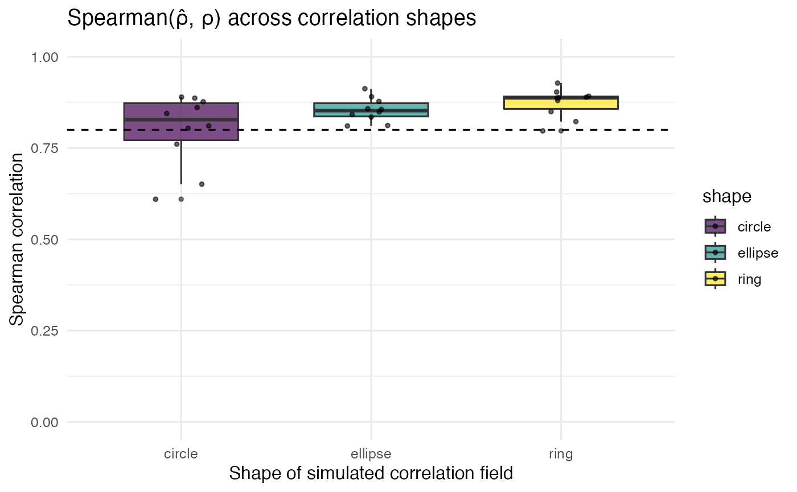

Tutorial 2: Semi-synthetic simulation for user-defined correlation structures
Yuxin Yin
24 October 2025
Source:vignettes/semi_synthetic_sim.Rmd
semi_synthetic_sim.Rmd
library(spCorr)
library(ggplot2)
library(dplyr)
library(tidyr)
library(MASS)
library(scales)
library(viridis)Introduction
In this tutorial we will demonstrate the ability of spCorr to detect and adapt to diverse spatial correlation patterns. Then, we will visualize the estimated correlation structures by running spCorr and compare with the true correlation structures.
Load the DLPFC data
Here, we use a real spatial transcriptomics dataset DLPFC from 10x Visium platform to obtain real tissue spatial coordinates Maynard, K. R. et al., 2021. The purpose is to anchor the simulation in real-world tissue shapes, allowing spatial patterns to be generated over biologically relevant domains.
# Load preprocessed DLPFC Visium data (provides 'data_svg400')
load("data_svg400_size_adj.RData") # Replace with your actual file path
# Extract metadata and count matrix
cov_mat <- data_svg400$cov_mat
counts_in <- as.matrix(data_svg400$counts)
# Load gene pair list (TF-target or known pairs)
gene_pair_list <- read.csv("gene_pair_list.csv")Define spatial correlation fields
In this step, users can define various spatial correlation structures (e.g., elliptical, circular, and ring-shaped) based on real data. These describe how gene-gene correlations vary across space.
sim_corr_shape <- function(cov_mat,
shape = c("ellipse", "circle", "ring"),
strength = 1.5,
seed = 123) {
shape <- match.arg(shape)
set.seed(seed)
x <- cov_mat$x1
y <- cov_mat$x2
x_n <- (x - min(x)) / diff(range(x))
y_n <- (y - min(y)) / diff(range(y))
if (shape == "ellipse") {
ctr <- c(mean(x), mean(y))
ang <- pi / 4
a <- diff(range(x)) * 0.30
b <- diff(range(y)) * 0.10
xr <- (x - ctr[1]) * cos(ang) - (y - ctr[2]) * sin(ang)
yr <- (x - ctr[1]) * sin(ang) + (y - ctr[2]) * cos(ang)
dist <- sqrt((xr^2 / a^2) + (yr^2 / b^2))
rho <- tanh(3 - 2.3 * sqrt(dist))
} else if (shape == "circle") {
cx <- mean(x_n); cy <- mean(y_n)
r <- sqrt((x_n - cx)^2 + (y_n - cy)^2)
rho <- exp(-((r / 0.35)^2)) * 2 - 1
} else if (shape == "ring") {
cx <- mean(x_n); cy <- mean(y_n)
r <- sqrt((x_n - cx)^2 + (y_n - cy)^2)
r0 <- 0.40; sigma <- 0.08
rho <- exp(-((r - r0)^2) / (2 * sigma^2)) * 2 - 1
}
pmin(pmax(rho * strength, -0.99), 0.99)
}Visualization of the true fields
We can have a quick look at the true correlation fields, which serves as a reference to assess how well the estimated correlations match these simulated patterns.
shapes <- c("ellipse","circle","ring")
df_true <- purrr::map_df(c("circle","ellipse","ring"), function(sh) {
tibble(
spot = rownames(cov_mat),
x1 = cov_mat$x1,
x2 = cov_mat$x2,
rho = sim_corr_shape(cov_mat, shape = sh, strength = 1.5),
shape = sh
)
})
ggplot(df_true, aes(x1, -x2, color = rho)) +
geom_point(size = 0.6) +
facet_wrap(~shape, nrow = 1) +
scale_color_gradientn(
colors = c("blue", "white", "red"),
values = scales::rescale(c(-1, 0, 1)),
limits = c(-1, 1)
) +
coord_fixed() +
theme_minimal(base_size = 11) +
labs(title = "User-defined correlation fields ρ(s)",
color = expression(rho))
Simulate correlated counts
Based on the defined spatial fields, we can then simulate count data for gene pairs:
Spot coordinates, library sizes, and layer annotations are extracted from the real Visium DLPFC dataset Maynard, K. R. et al., 2021.
Spatially varying correlation patterns (
rho_vec) are user-defined and injected using a bivariate log-normal model.Final counts are simulated using Poisson sampling to mimmic realistic ST data.
colnames(gene_pair_list) <- c("X", "tf", "target")
head(gene_pair_list)
#> X tf target
#> 1 ENSG00000123560_ENSG00000197971 ENSG00000123560 ENSG00000197971
#> 2 ENSG00000173786_ENSG00000109846 ENSG00000173786 ENSG00000109846
#> 3 ENSG00000131095_ENSG00000091513 ENSG00000131095 ENSG00000091513
#> 4 ENSG00000110484_ENSG00000168314 ENSG00000110484 ENSG00000168314
#> 5 ENSG00000111341_ENSG00000167641 ENSG00000111341 ENSG00000167641
#> 6 ENSG00000160307_ENSG00000118785 ENSG00000160307 ENSG00000118785
sim_data <- list()
pairs_per_shape <- 10
for (sh in shapes) {
cat("Simulating shape:", sh, "\n")
rho_vec <- sim_corr_shape(data_svg400$cov_mat, shape = sh, strength = 1.5)
sim_data[[sh]] <- simulate_multiple_pairs(
data_svg400 = data_svg400,
rho_vec = rho_vec,
gene_pair_list = gene_pair_list,
n_pairs = pairs_per_shape
)
}
#> Simulating shape: ellipse
#> Simulating shape: circle
#> Simulating shape: ringRun spCorr
We now apply the spCorr to transform the data using a Gaussian copula and model correlation as a function of spatial coordinates using quasi-GAMs. This step estimates the local correlation patterns without assuming a fixed global correlation.
results <- list()
for (sh in shapes) {
cat("Running spCorr for shape:", sh, "\n")
sim_list <- sim_data[[sh]]
for (nm in names(sim_list)) {
sim <- sim_list[[nm]]
rownames(sim$counts) <- sim$gene_list
fit <- spCorr(
sim$counts,
sim$gene_list,
sim$pair_df,
sim$cov_mat,
formula1 = "layer_annotations",
family1 = "nb",
formula2 = paste0("s(x1, x2, bs='tp', k=", 50, ")"),
family2 = quasiproductr(),
DT = TRUE,
global_test = "lrt",
ncores = 8,
seed = 123
)
# add shape prefix to make key unique
pair_name <- paste(sh, sim$pair_df$tf, sim$pair_df$target, sep = "_")
rho_est <- as.vector(fit$res_local[paste(sim$pair_df$tf, sim$pair_df$target, sep = "_"), ])
results[[pair_name]] <- list(
shape = sh,
tf = sim$pair_df$tf,
target = sim$pair_df$target,
rho_true = sim$rho_true,
rho_est = rho_est,
spcorr_result = fit
)
}
}
#> Running spCorr for shape: ellipse
#> Start Marginal Fitting for 2 genes
#> Start Extracting Spatially Varying Gene Pairs
#> Start Product Fitting for 1 gene pairs
#> Start Marginal Fitting for 2 genes
#> Start Extracting Spatially Varying Gene Pairs
#> Start Product Fitting for 1 gene pairs
#> Start Marginal Fitting for 2 genes
#> Start Extracting Spatially Varying Gene Pairs
#> Start Product Fitting for 1 gene pairs
#> Start Marginal Fitting for 2 genes
#> Start Extracting Spatially Varying Gene Pairs
#> Start Product Fitting for 1 gene pairs
#> Start Marginal Fitting for 2 genes
#> Start Extracting Spatially Varying Gene Pairs
#> Start Product Fitting for 1 gene pairs
#> Start Marginal Fitting for 2 genes
#> Start Extracting Spatially Varying Gene Pairs
#> Start Product Fitting for 1 gene pairs
#> Start Marginal Fitting for 2 genes
#> Start Extracting Spatially Varying Gene Pairs
#> Start Product Fitting for 1 gene pairs
#> Start Marginal Fitting for 2 genes
#> Start Extracting Spatially Varying Gene Pairs
#> Start Product Fitting for 1 gene pairs
#> Start Marginal Fitting for 2 genes
#> Start Extracting Spatially Varying Gene Pairs
#> Start Product Fitting for 1 gene pairs
#> Start Marginal Fitting for 2 genes
#> Start Extracting Spatially Varying Gene Pairs
#> Start Product Fitting for 1 gene pairs
#> Running spCorr for shape: circle
#> Start Marginal Fitting for 2 genes
#> Start Extracting Spatially Varying Gene Pairs
#> Start Product Fitting for 1 gene pairs
#> Start Marginal Fitting for 2 genes
#> Start Extracting Spatially Varying Gene Pairs
#> Start Product Fitting for 1 gene pairs
#> Start Marginal Fitting for 2 genes
#> Start Extracting Spatially Varying Gene Pairs
#> Start Product Fitting for 1 gene pairs
#> Start Marginal Fitting for 2 genes
#> Start Extracting Spatially Varying Gene Pairs
#> Start Product Fitting for 1 gene pairs
#> Start Marginal Fitting for 2 genes
#> Start Extracting Spatially Varying Gene Pairs
#> Start Product Fitting for 1 gene pairs
#> Start Marginal Fitting for 2 genes
#> Start Extracting Spatially Varying Gene Pairs
#> Start Product Fitting for 1 gene pairs
#> Start Marginal Fitting for 2 genes
#> Start Extracting Spatially Varying Gene Pairs
#> Start Product Fitting for 1 gene pairs
#> Start Marginal Fitting for 2 genes
#> Start Extracting Spatially Varying Gene Pairs
#> Start Product Fitting for 1 gene pairs
#> Start Marginal Fitting for 2 genes
#> Start Extracting Spatially Varying Gene Pairs
#> Start Product Fitting for 1 gene pairs
#> Start Marginal Fitting for 2 genes
#> Start Extracting Spatially Varying Gene Pairs
#> Start Product Fitting for 1 gene pairs
#> Running spCorr for shape: ring
#> Start Marginal Fitting for 2 genes
#> Start Extracting Spatially Varying Gene Pairs
#> Start Product Fitting for 1 gene pairs
#> Start Marginal Fitting for 2 genes
#> Start Extracting Spatially Varying Gene Pairs
#> Start Product Fitting for 1 gene pairs
#> Start Marginal Fitting for 2 genes
#> Start Extracting Spatially Varying Gene Pairs
#> Start Product Fitting for 1 gene pairs
#> Start Marginal Fitting for 2 genes
#> Start Extracting Spatially Varying Gene Pairs
#> Start Product Fitting for 1 gene pairs
#> Start Marginal Fitting for 2 genes
#> Start Extracting Spatially Varying Gene Pairs
#> Start Product Fitting for 1 gene pairs
#> Start Marginal Fitting for 2 genes
#> Start Extracting Spatially Varying Gene Pairs
#> Start Product Fitting for 1 gene pairs
#> Start Marginal Fitting for 2 genes
#> Start Extracting Spatially Varying Gene Pairs
#> Start Product Fitting for 1 gene pairs
#> Start Marginal Fitting for 2 genes
#> Start Extracting Spatially Varying Gene Pairs
#> Start Product Fitting for 1 gene pairs
#> Start Marginal Fitting for 2 genes
#> Start Extracting Spatially Varying Gene Pairs
#> Start Product Fitting for 1 gene pairs
#> Start Marginal Fitting for 2 genes
#> Start Extracting Spatially Varying Gene Pairs
#> Start Product Fitting for 1 gene pairsCompare true vs. estimated correlations
In this section, we evaluate the performance of spCorr by comparing its estimated correlation fields to the ground-truth correlation fields generated earlier.
Estimated Correlation Structures
Estimated spatial correlation maps are visualized and compared to the original patterns. Based on the results, we can see that spCorr successfully recover the shapes of the three simulated correlation fields.
df_est <- purrr::imap_dfr(results, function(obj, nm) {
tibble(
x1 = data_svg400$cov_mat$x1,
x2 = data_svg400$cov_mat$x2,
rho = obj$rho_est,
shape = obj$shape
)
})
df_est_avg <- df_est %>%
group_by(shape, x1, x2) %>%
summarise(rho = mean(rho, na.rm = TRUE), .groups = "drop")
ggplot(df_est_avg, aes(x1, -x2, color = rho)) +
geom_point(size = 0.6) +
facet_wrap(~shape, nrow = 1) +
scale_color_gradientn(
colors = c("blue", "white", "red"),
values = rescale(c(-1, 0, 1)),
limits = c(-1, 1)
) +
coord_fixed() +
theme_minimal(base_size = 12) +
labs(
title = "spCorr-estimated correlation structures ρ̂(s)",
color = expression(hat(rho))
)
Spearman Correlation
Finally, quantitative comparison is made by computing Spearman correlation between true and estimated correlation values.
spearman_df <- bind_rows(lapply(results, function(x) {
tibble(
shape = x$shape,
tf = x$tf,
target = x$target,
spearman = suppressWarnings(cor(x$rho_true, x$rho_est, method = "spearman"))
)
}))
ggplot(spearman_df, aes(shape, spearman, fill = shape)) +
geom_boxplot(width = 0.6, alpha = 0.7, outlier.size = 1) +
geom_jitter(width = 0.15, size = 1, alpha = 0.6) +
geom_hline(yintercept = 0.8, linetype = 2) +
scale_fill_viridis_d() +
theme_minimal(base_size = 12) +
labs(
title = "Spearman(ρ̂, ρ) across correlation shapes",
x = "Shape of simulated correlation field",
y = "Spearman correlation"
) +
ylim(0, 1)
Session Info
sessionInfo()
#> R version 4.4.1 (2024-06-14)
#> Platform: aarch64-apple-darwin20
#> Running under: macOS Sonoma 14.2.1
#>
#> Matrix products: default
#> BLAS: /Library/Frameworks/R.framework/Versions/4.4-arm64/Resources/lib/libRblas.0.dylib
#> LAPACK: /Library/Frameworks/R.framework/Versions/4.4-arm64/Resources/lib/libRlapack.dylib; LAPACK version 3.12.0
#>
#> locale:
#> [1] en_US.UTF-8/en_US.UTF-8/en_US.UTF-8/C/en_US.UTF-8/en_US.UTF-8
#>
#> time zone: America/New_York
#> tzcode source: internal
#>
#> attached base packages:
#> [1] stats graphics grDevices utils datasets methods base
#>
#> other attached packages:
#> [1] viridis_0.6.5 viridisLite_0.4.2 scales_1.4.0 MASS_7.3-65
#> [5] tidyr_1.3.1 dplyr_1.1.4 ggplot2_4.0.0 spCorr_0.0.0.9000
#> [9] BiocStyle_2.32.1
#>
#> loaded via a namespace (and not attached):
#> [1] sass_0.4.10 generics_0.1.4 lattice_0.22-7
#> [4] digest_0.6.37 magrittr_2.0.4 evaluate_1.0.5
#> [7] grid_4.4.1 RColorBrewer_1.1-3 bookdown_0.45
#> [10] fastmap_1.2.0 jsonlite_2.0.0 Matrix_1.7-4
#> [13] ape_5.8-1 gridExtra_2.3 BiocManager_1.30.26
#> [16] mgcv_1.9-3 purrr_1.1.0 textshaping_1.0.4
#> [19] jquerylib_0.1.4 cli_3.6.5 rlang_1.1.6
#> [22] splines_4.4.1 withr_3.0.2 cachem_1.1.0
#> [25] yaml_2.3.10 tools_4.4.1 parallel_4.4.1
#> [28] vctrs_0.6.5 R6_2.6.1 lifecycle_1.0.4
#> [31] fs_1.6.6 htmlwidgets_1.6.4 ragg_1.5.0
#> [34] pkgconfig_2.0.3 desc_1.4.3 pkgdown_2.1.3
#> [37] bslib_0.9.0 pillar_1.11.1 gtable_0.3.6
#> [40] glue_1.8.0 Rcpp_1.1.0 systemfonts_1.3.1
#> [43] xfun_0.53 tibble_3.3.0 tidyselect_1.2.1
#> [46] rstudioapi_0.17.1 knitr_1.50 farver_2.1.2
#> [49] htmltools_0.5.8.1 nlme_3.1-168 labeling_0.4.3
#> [52] rmarkdown_2.30 compiler_4.4.1 S7_0.2.0